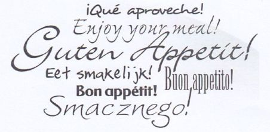
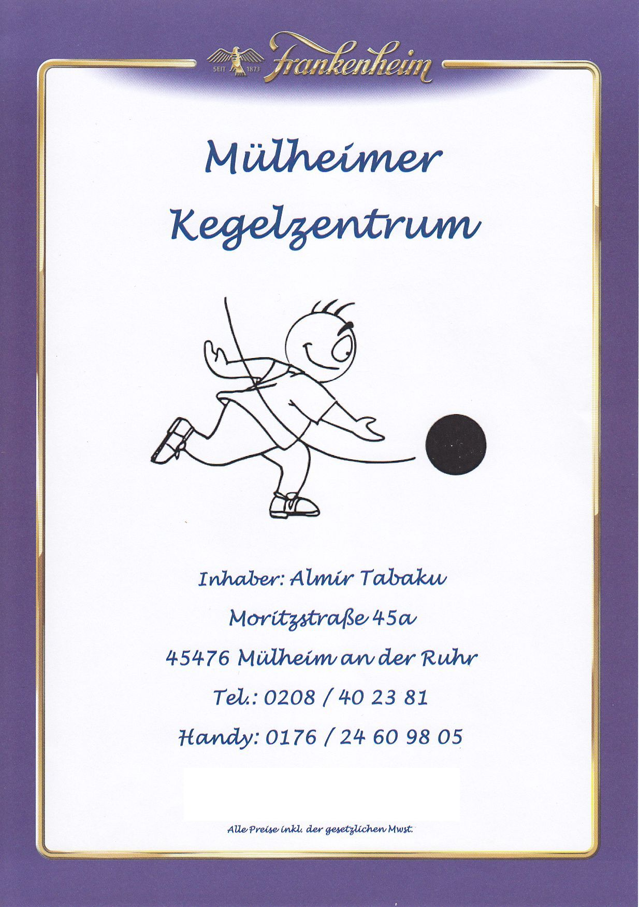
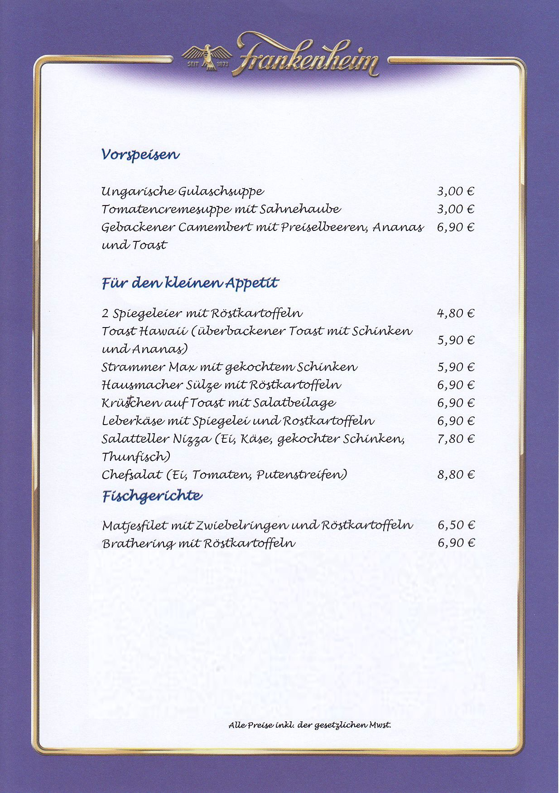
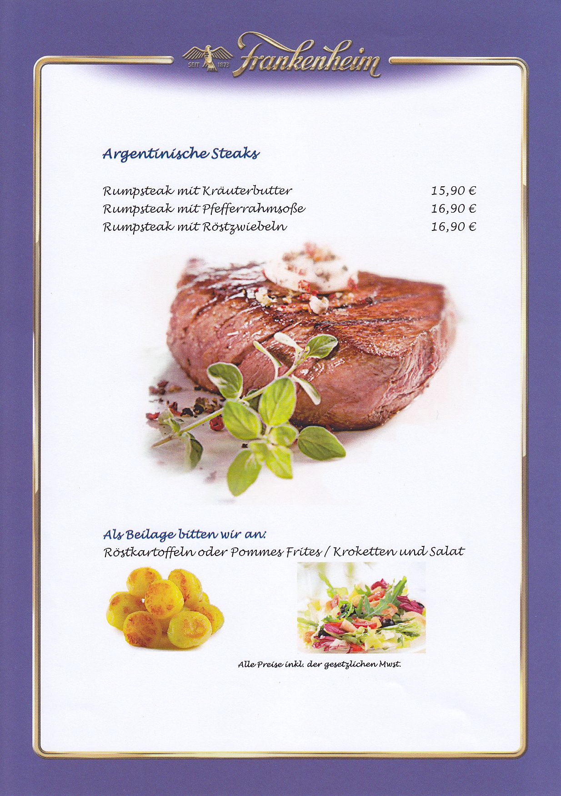
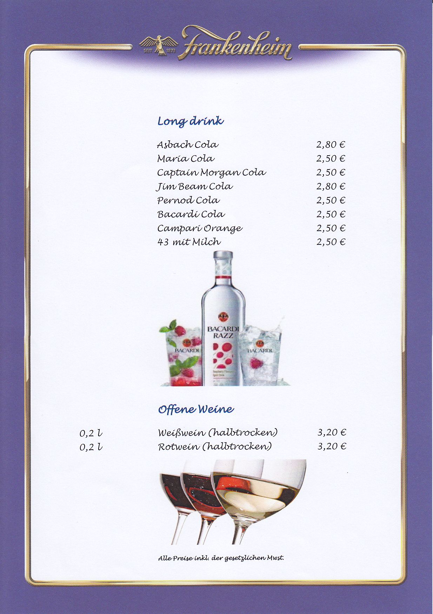

Gastwirt
Almir Tabaku ( oder einfach Mirco )
sagt " Herzlichst Willkommen "
und wird euch gern mit Getränken und Speisen verwöhnen.
Getränke- u. Speise-Karte





Speise- u. Getränkeliste zum Downloden